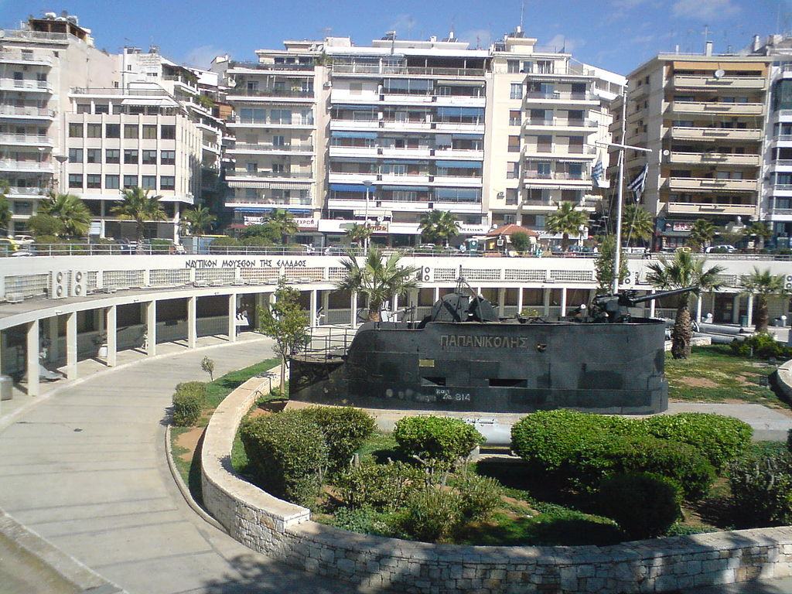

Το Ναυτικό Μουσείο της Ελλάδος υπήρξε διακαής πόθος των ελλήνων πλοιάρχων Του νεοσύστατου κράτους. Ήδη από το 1867 έγιναν προσπάθειες να δημιουργηθεί ένας χώρος με σκοπό την αναζήτηση, περισυλλογή, διαφύλαξη και έκθεση των ιστορικών κειμηλίων που αναφέρονται στους ναυτικούς αγώνες, καθώς και σε κάθε θαλάσσια δραστηριότητα των Ελλήνων από την προϊστορική εποχή ως τις μέρες μας. Τα εγκαίνια του Μουσείου πραγματοποιούνται 4/08/1967. Μέσα από τις δράσεις του μελετά και τεκμηριώνει την ναυτική ιστορία. Παράλληλα καλλιεργεί την αγάπη για την θάλασσα και την προστασία της με σύγχρονες εκπαιδευτικές μεθόδους και δράσεις. Στην είσοδο του Μουσείου έχει ενσωματωθεί ένα τμήμα του αρχαίου τείχους του Κόνωνος. Ο επισκέπτης μπορεί να θαυμάσει τον αύλειο χώρο με την αρχαία Ιστορία και σύγχρονη ιστορία να ξεδιπλώνεται μπροστά του. Γλυπτά και σημαντικά υπαίθρια εκθέματα όπως ο πυργίσκος του ιστορικού υποβρυχίου Παπανικολής και άγκυρες πλοίων της εποχής της Ναυμαχίας του Ναβαρίνου. Στους εκθεσιακούς Χώρους τα 2500 εκθέματα ταξιδευουν τον επισκέπτη από την προϊστορία στην Σύγχρονη εποχή. Στο χώρο του Μουσείου υπάρχει, επίσης, Ναυτική Βιβλιοθήκη ανοικτή στο κοινό κατά τις ημέρες και ώρες λειτουργίας του, η οποία διαθέτει περισσότερους από 17.000 τόμους βιβλίων και περιοδικών με κύριο θέμα τη ναυτική ιστορία, επιστήμη και τέχνη.
